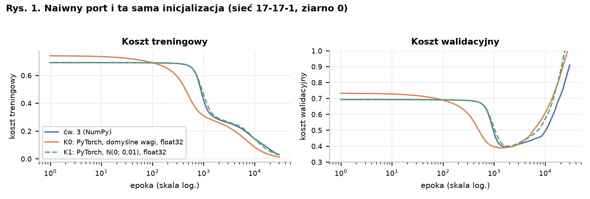
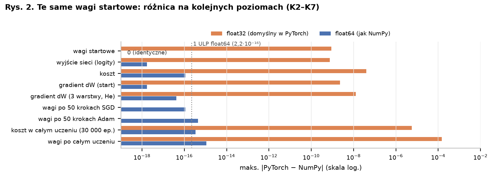
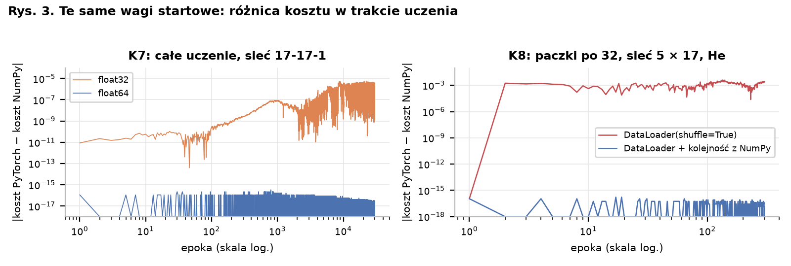
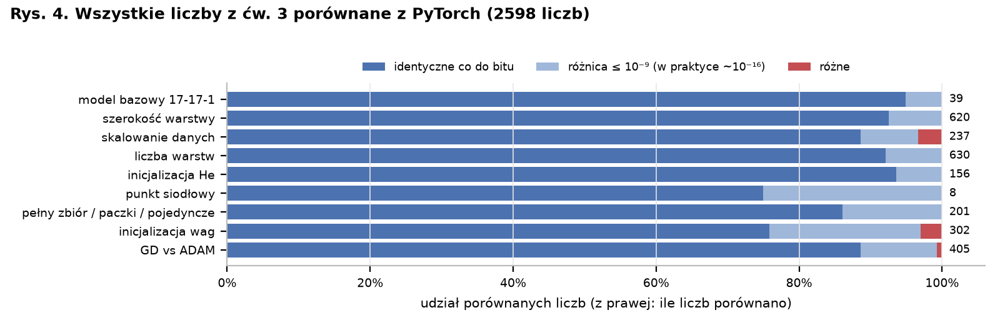
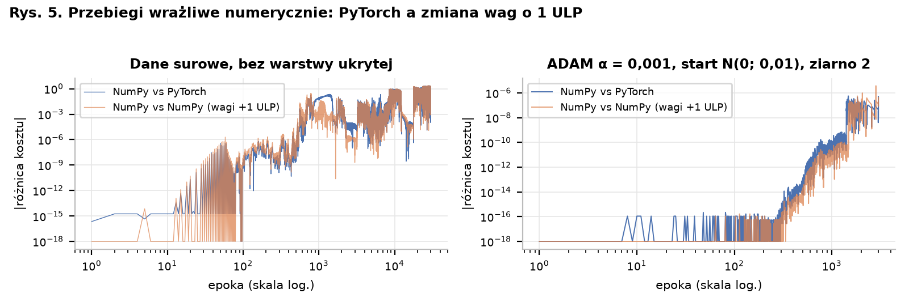
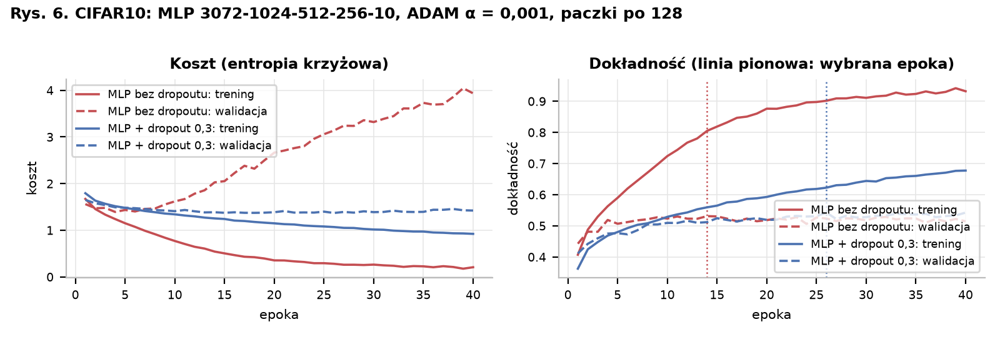
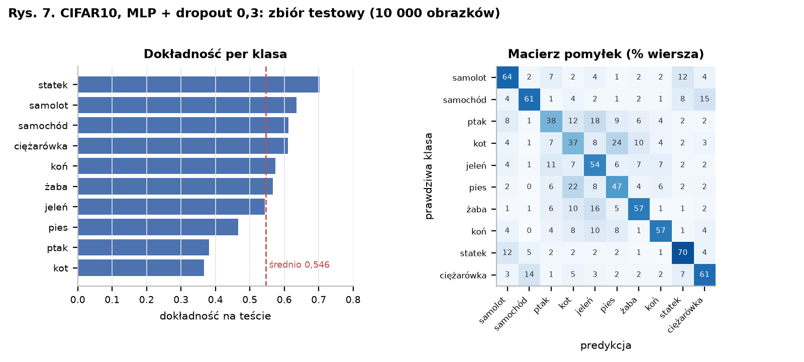

Ta sama sieć co w ćw. 3: 17 wejść, warstwy liniowe z ReLU, na wyjściu sigmoida i entropia krzyżowa. Cel: te same eksperymenty i jak najbardziej podobne wyniki. Różnice usuwam po jednej (kroki K0–K9) i sprawdzam na kolejnych poziomach: zachowanie, metryki, wagi, gradienty.
| ćw. 3 (NumPy, własny kod) | PyTorch |
|---|---|
| warstwa liniowa z ręcznym backward | nn.Linear |
| ReLU jako X · [X > 0] | nn.ReLU, czyli max(0, X) |
| sigmoida + entropia krzyżowa, gradient (p − y)/N | BCEWithLogitsLoss |
| backward każdego modułu w odwrotnej kolejności | loss.backward() po grafie obliczeniowym |
| w ← w − α·dw, własny ADAM | torch.optim.SGD / Adam + zero_grad() |
| losowa permutacja i pętla po paczkach | DataLoader z własną kolejnością |
Różnice, które mogą zmienić wynik: wagi startowe i generator losowy, precyzja (float32 / float64), funkcja kosztu przy skrajnych wyjściach, kolejność przykładów w paczkach, kolejność operacji w pętli, zapis ReLU.
K0: sieć jak w tutorialu (domyślne wagi nn.Linear, float32). K1: wagi N(0; 0,01) i bias 0 jak w ćw. 3, ale losowane generatorem PyTorch. Sieć 17-17-1, α = 0,01, 30 000 epok, 3 ziarna.

| wariant | koniec plateau (epoka) | najlepsza epoka | F1 test |
|---|---|---|---|
| ćw. 3 (NumPy) | 724 / 814 / 759 | 1783 / 1797 / 1854 | 0,76 / 0,76 / 0,76 |
| K0: domyślne wagi | 291 / 120 / 38 | 1392 / 1387 / 957 | 0,76 / 0,79 / 0,77 |
| K1: N(0; 0,01) | 737 / 923 / 759 | 1847 / 1939 / 1730 | 0,76 / 0,79 / 0,76 |
| wagi startowe | std wag | bias |
|---|---|---|
| ćw. 3 | 0,01 | 0 |
| nn.Linear | 0,143 | losowy |
Obserwacje
Wniosek: ta sama architektura nie daje tych samych liczb, trzeba skopiować wagi startowe.
Wagi startowe kopiuję z sieci z ćw. 3 i porównuję maksymalną różnicę |PyTorch − NumPy| na kolejnych poziomach.

| poziom | float32 | float64 |
|---|---|---|
| wagi startowe | 9·10⁻¹⁰ | 0 |
| koszt | 4·10⁻⁸ | 1·10⁻¹⁶ |
| gradient dW | 2·10⁻⁹ | 2·10⁻¹⁸ |
| wagi po 50 krokach ADAM | – | 4·10⁻¹⁶ |
| z, y = 1 | koszt ćw. 3 | BCEWithLogits | grad. ćw. 3 | grad. sigmoid+BCELoss |
|---|---|---|---|---|
| −50 | 27,6 | 50,0 | −1 | −1,9·10⁻¹⁰ |
| −30 | 27,6 | 30,0 | −1 | −0,094 |
| −10 | 10,0 | 10,0 | −1 | −1 |
Obserwacje
Wniosek: przy tych samych wagach i float64 jeden krok uczenia jest taki sam z dokładnością do zaokrągleń.
K7: 30 000 epok na pełnym zbiorze. K8: paczki po 32, 300 epok, sieć z 5 warstwami po 17 neuronów i wagami He.

| wariant | maks. różnica kosztu | różnica wag na końcu | najlepsza epoka i macierz pomyłek |
|---|---|---|---|
| K7, float64 | 3·10⁻¹⁶ | 1·10⁻¹⁵ | te same (1783) |
| K7, float32 | 6·10⁻⁶ | 1,5·10⁻⁴ | te same (1783) |
| K8, DataLoader(shuffle=True) | 4·10⁻³ | 0,048 | koszt końcowy 0,094 zamiast 0,096 |
| K8, kolejność z NumPy | 2·10⁻¹⁶ | 7·10⁻¹⁶ | te same |
Obserwacje
Wniosek: po wyrównaniu wag, precyzji, kosztu i kolejności zostaje tylko błąd zaokrągleń, który w stabilnym uczeniu nie rośnie.
Powtórzyłem w PyTorch wszystkie eksperymenty z ćw. 3 (float64, te same wagi i ziarna) i porównałem każdą zapisaną liczbę: koszty, epoki, normy gradientów, metryki, macierze pomyłek.

| eksperyment, w którym coś się różni | ćw. 3 (NumPy) | PyTorch |
|---|---|---|
| inicjalizacja N(0; 10), ziarno 0 | NaN po 1 epoce | koszt 0,690, bez NaN |
| dane surowe, bez warstwy ukrytej | koszt końcowy 7,97 | 8,39 |
| ADAM α = 0,001, start N(0; 0,01), ziarno 2 | 0,00608647 | 0,00608648 |
Obserwacje
Wniosek: sieć z ćw. 3 udało się odtworzyć w PyTorch, poza trzema przebiegami opisanymi niżej.
Sprawdzam, czy te same różnice pojawiają się w samym NumPy po zmianie wag o 1 ULP (najmniejszy możliwy krok liczby float64).

| N(0; 10), ziarno 0 | wynik |
|---|---|
| NumPy, ReLU X · [X > 0] (ćw. 3) | NaN |
| NumPy, ReLU max(0, X) | koszt 0,690 |
| PyTorch, nn.ReLU | koszt 0,690 |
| PyTorch, ReLU X · [X > 0] | NaN |
| porównanie | NumPy vs PyTorch | NumPy vs NumPy +1 ULP |
|---|---|---|
| dane surowe: różnica > 10⁻⁶ od epoki | 329 | 57 |
| dane surowe: koszt końcowy (NumPy 7,97) | 8,39 | 8,21 |
| ADAM: maks. różnica kosztu | 6·10⁻⁷ | 4·10⁻⁶ |
Obserwacje
Wniosek: pozostałe różnice wynikają z arytmetyki zmiennoprzecinkowej, a nie z błędu w implementacji.
50 000 obrazków 32×32×3 w 10 klasach: 45 000 do uczenia, 5 000 do walidacji, plus 10 000 testowych. Obrazek spłaszczony do 3072 liczb i standaryzowany per kanał. Sieć 3072-1024-512-256-10 z ReLU (3,8 mln wag), softmax i entropia krzyżowa, ADAM α = 0,001, paczki po 128, 40 epok. Biorę wagi z epoki o najlepszej dokładności walidacyjnej.

| wariant | najlepsza epoka | dokładność walidacja | dokładność test | koszt test | dokładność trening (40 ep.) |
|---|---|---|---|---|---|
| MLP bez dropoutu | 14 | 0,531 | 0,536 | 2,03 | 0,93 |
| MLP + dropout 0,3 | 26 | 0,542 | 0,546 | 1,36 | 0,68 |
Obserwacje
Wniosek: baseline do ćw. 5 to 54,6% dokładności na teście (losowe zgadywanie daje 10%).

| najczęstsze pomyłki | % klasy |
|---|---|
| kot → pies | 24 |
| pies → kot | 22 |
| ptak → jeleń | 18 |
| żaba → jeleń | 16 |
| samochód → ciężarówka | 15 |
Obserwacje
Wniosek: do obrazów potrzebne są warstwy, które korzystają z sąsiedztwa pikseli (konwolucje w ćw. 5).